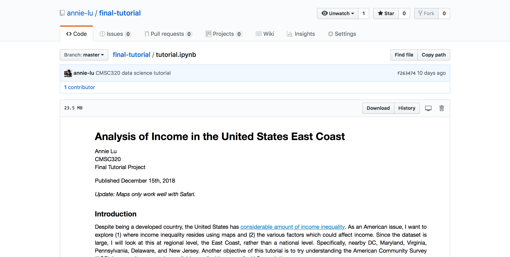

Data Science Final Tutorial
For my final project in CMSC320, I decided to analyze income using U.S Census Data, the American Community Survey. This was done using Python, and I go more indepth of the tools/libraries I used within the tutorial. Overall, this project ended up being a lot more challenging than expected, because I was handling (1) big data (2) weighted samples. It was a great learning process, and I gained experience:
Extracting ACS data using IPUMS, Scraping data from websites
Using Pandas and Numpy to do basic statistics/analysis
Creating choropleth maps with Folium and GeoJSON files
Trying Seaborn libraries (used ggplot and matplotlib in the past)